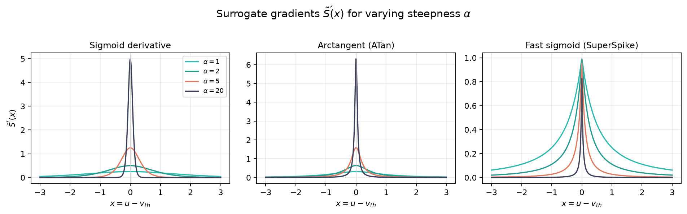

Surrogate Gradient Learning (SGL)
Surrogate Gradient Learning (SGL) is a technique primarily used to train neural networks that contain non-differentiable activation functions. It is the mathematical backbone for training Spiking Neural Networks (SNNs) and Binarized Neural Networks (BNNs) using standard backpropagation.
1. The Problem: The "Dead" Gradient
In a standard artificial neural network, activation functions like ReLU or Sigmoid are differentiable, allowing us to use the chain rule to update weights.
However, in SNNs or binarized networks, the neuron fires based on a thresholding function—specifically, the Heaviside step function, denoted as \(S(x)\). Let \(x\) be the membrane potential minus the firing threshold (\(x = u - v_{th}\)). The forward pass is defined as:
\[S(x) = \Theta(x) = \begin{cases} 1 & \text{if } x \ge 0 \\ 0 & \text{if } x < 0 \end{cases}\]
To update the network weights \(W\) using gradient descent, we need to calculate the gradient of the loss \(L\) with respect to the weights. Using the chain rule:
\[\frac{\partial L}{\partial W} = \frac{\partial L}{\partial S} \frac{\partial S}{\partial x} \frac{\partial x}{\partial W}\]
The critical failure point is \(\frac{\partial S}{\partial x}\). The mathematical derivative of the Heaviside step function is the Dirac delta function, \(\delta(x)\):
\[\frac{\partial S}{\partial x} = \delta(x) = \begin{cases} \infty & \text{if } x = 0 \\ 0 & \text{if } x \neq 0 \end{cases}\]
Because the gradient is zero almost everywhere, the error cannot propagate backward through the network. The network simply stops learning. This is known as the "dead gradient" problem.
2. The Solution: The Surrogate Gradient
Surrogate Gradient Learning solves this by decoupling the forward pass from the backward pass.
- Forward Pass: We continue to use the exact Heaviside step function \(S(x)\) to emit discrete, binary spikes.
- Backward Pass: We replace the problematic Dirac delta \(\delta(x)\) with a smooth, continuous, and differentiable surrogate function, denoted as \(\tilde{S}'(x)\).
The modified chain rule becomes:
\[\frac{\partial L}{\partial W} \approx \frac{\partial L}{\partial S} \tilde{S}'(x) \frac{\partial x}{\partial W}\]
This allows gradients to flow smoothly through the network, enabling standard optimizers (like Adam or SGD) to update the weights.
3. Common Mathematical Surrogate Functions
A good surrogate gradient resembles a smoothed version of the Dirac delta. It is typically the derivative of a continuous sigmoid-like function. They all share a steepness parameter (\(\alpha\)) that controls how closely the surrogate approximates the true Dirac delta.
As \(\alpha \to \infty\), the surrogate gradient \(\tilde{S}'(x) \to \delta(x)\).
A. The Sigmoid Derivative
We assume the forward pass was approximated by a scaled sigmoid function \(\sigma(\alpha x) = \frac{1}{1 + e^{-\alpha x}}\). The surrogate gradient used in the backward pass is its derivative:
\[\tilde{S}'(x) = \alpha \sigma(\alpha x)(1 - \sigma(\alpha x))\]
B. The Arctangent Derivative (ATan)
Often preferred for its heavy tails, which allow gradients to flow even when the membrane potential is far from the threshold.
\[\tilde{S}'(x) = \frac{1}{\pi} \frac{\alpha}{1 + (\alpha x)^2}\]
C. The Fast Sigmoid Derivative (SuperSpike)
Computationally cheaper than the standard sigmoid because it avoids the exponential operation \(e^x\).
\[\tilde{S}'(x) = \frac{1}{(1 + |\alpha x|)^2}\]
